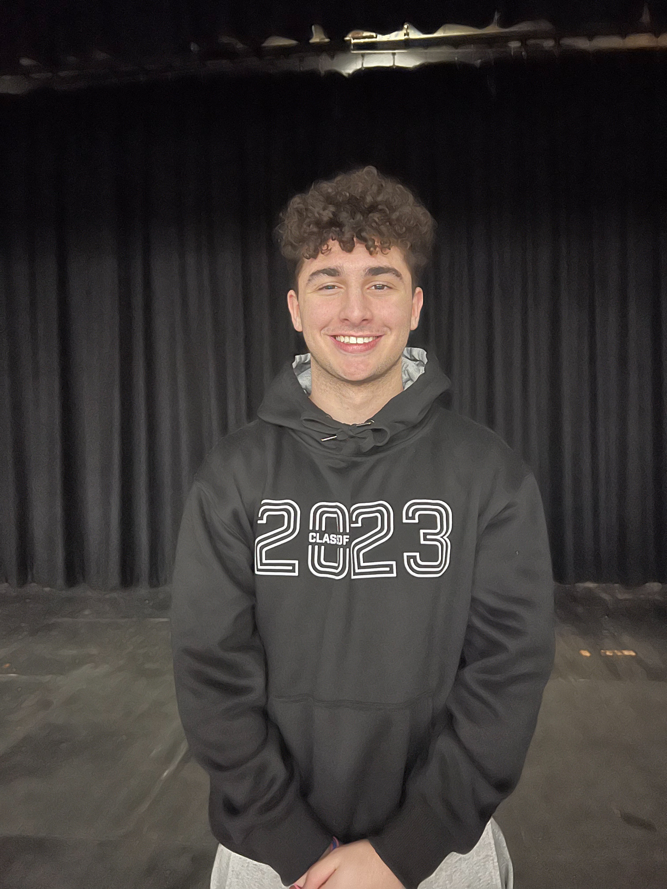
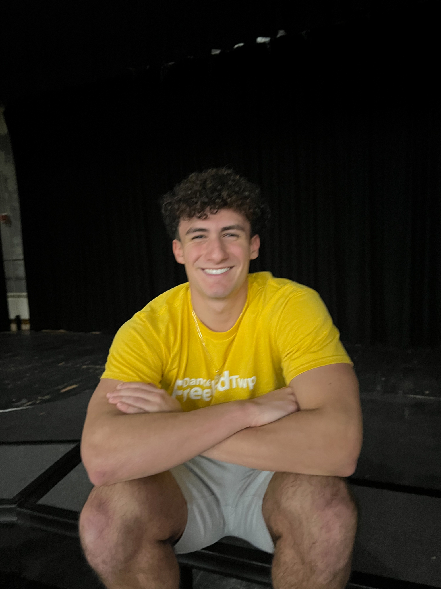
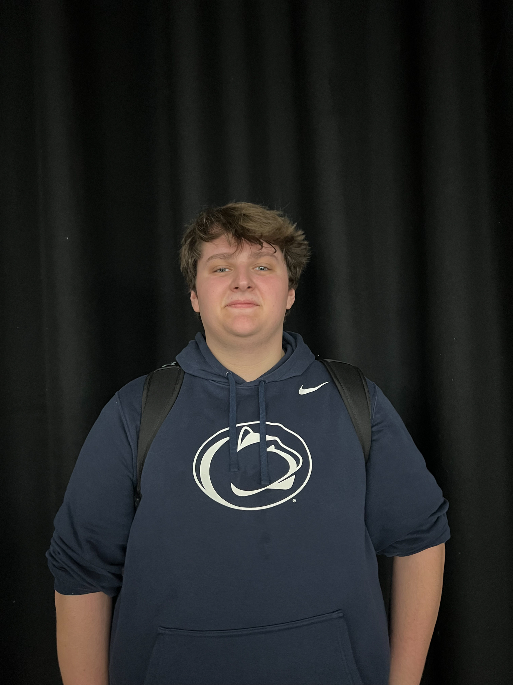
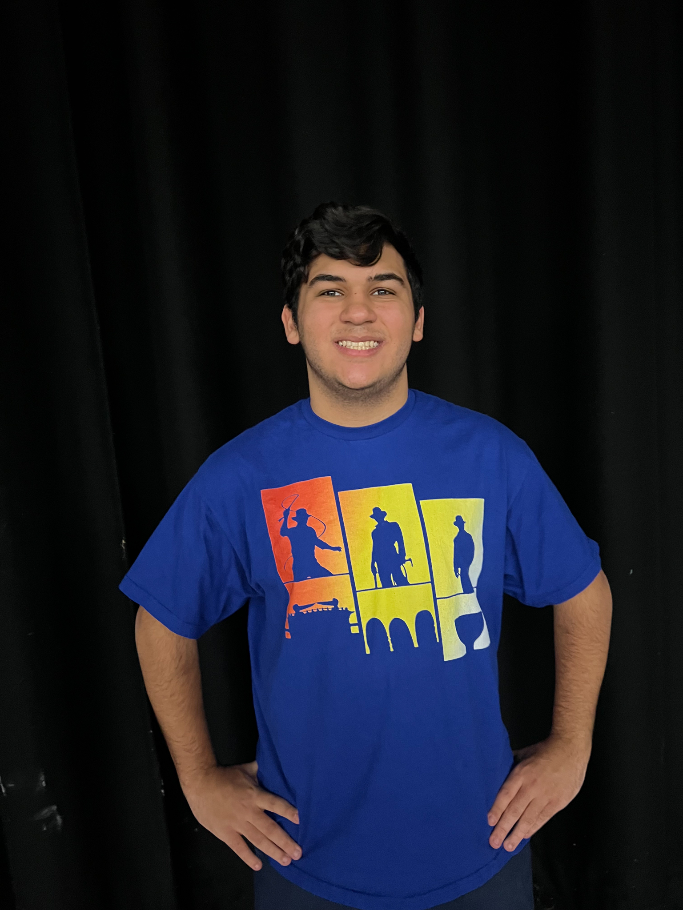
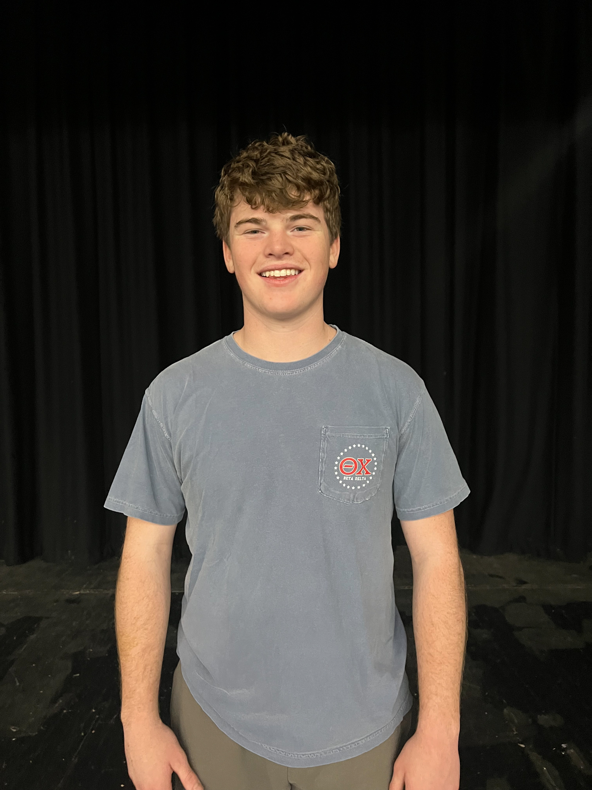

- Welcome
- Group Performance
- Introductions
- Swimwear
- Individual and Small Group Talent
- Video
- Question and Answer
- Mr. Congeniality Award
- Crowning of Mr. FTHS
Meet Our Contestants
Why do you want to be Mr. FTHS?
Kyle Chalfin
KyleI want to be Mr. FTHS because it would be a storybook ending to my four years here at FTHS. I remember watching Matt Madonna get crowned during my freshman year and I thought he was the coolest kid ever. These past couple of years I have been waiting for my turn to participate in this competition. Now that the competition is here, I am going to give it my all to hopefully be crowned just like Matt.
Jeremy LaTerra
JakeI think that it would be lots of fun to be Mr. FTHS and to work and compete with my friends.

Chris Nasso
NassoI want to be Mr. FTHS because I think that having the name would complete my high school career. These past 4 years have been the best 4 years of my life and I think that being at Freehold Township High School played a huge role in my experience. I take a lot of pride in being a senior at FTHS, and I want to make every moment the best it can possibly be.
Nicholas Davis
NickyI want to be Mr.FTHS because it is an honor to be named. I want to compete just like my brother and potentially win the title. It would truly be an honor to win Mr.FTHS.
Blake David
I want to be Mr.FTHS because being a guy at FTHS it shows that you are the best of the best. I have been talking about Mr.FTHS with my friends ever since I saw it freshman year.

Jack Goldsmith
GoldyI want to be Mr. FTHS because the reward of winning after all the hard work and early mornings we are about to put in will make it all worth it. Waking up at 6:30 two mornings a week is definitely tough, and being reimbursed with the crown will make it worth it. I will enjoy the night regardless of the outcome, but winning would make the feeling much better. Also, both my brothers participated in it when they were here, and they couldn’t win, so a win under the Goldsmith name would be very nice.

Connor Brown
connah bwownI would love to be crowned Mr.FTHS because over the past couple years at this high school I feel like I have grown humongous amounts of school spirit. I love going to all the sporting events and dressing up in body paint to going to fundraisers. I feel like my humor, kindness, and outgoing personality is what fits the perfect agenda of Mr.FTHS.
Christopher Liguori
ChrisI would like to be Mr. FTHS because I show a lot of love and passion towards the school. I show a lot of school spirit, and have a great relationship with all of the teachers at the school. Being crowned Mr. FTHS would be a great honor.
Maxwell Hawksby
MaxI want to be MR. FTHS because I love my school, and I love my chance to represent so many spirit factors. Being a bleater creature and in BOTC has given me the utmost joy so far, and becoming Mr. FTHS could cap it all off.

Andrew Parisi
I always wondered what activities I could get involved with Freehold Township. There’s not a day that goes by where I’m not excited to come into school to see the faculty, my friends, and my clubs. Being Mr. FTHS would be something I would love to do with my class, my peers, and the other faculty.

Jacob Nastarowicz
Jake NastyWhy would I want the most prestigious, high divine award on the planet earth? Who would not? To be crowned Mr. FTHS is a dream for many, and I am ready to make it my reality.
John Vlacich
JackBeing Mr. FTHS is like being the king of the school, it would be an honor. It is most definitely some nice bragging rights.
Justin Singer
Big JI would be honored to be Mr. FTHS to represent my school in what I believe is the highest honor one could receive. To be titled "Mr. FTHS" is something I truly desire.
Nicholas Dane
Nick DaneI want to be Mr. FTHS because I think that I am the perfect candidate to represent the school: Charismatic, respectful, and kind. I have been very involved in the school through sports and clubs, so I think that shows my commitment and dedication.
Order of Events
How are the contestants judged?
Group Dance
OVERALL SKILL
Introduction
CREATIVITY
Swimwear
STYLE
CREATIVITY
Individual and Small Group Talent
APPEARANCE
ORIGINALITY
OVERALL SKILL
FORMAL WEAR - SHOW YOUR STYLE
STYLE
ATTITUDE
QUESTION & ANSWER
CONTENT & CLARITY OF RESPONSE
OVERALL PRESENTATIONf
A Special Thank You to...